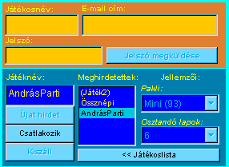

|
|
... ha még nem csatlakoztunk játékhoz?

Ha a Kártyaasztalnál vagyunk, akkor elõször meg kell várni a kapcsolat létrejöttét a SzélrózsaSzerverrel.
- Várjunk, amíg az InfóBox szövege nem változik arra, hogy már csatlakozhatunk játékhoz / meghirdethetünk játékot.
 Ha a Gyakorlóasztalnál vagyunk, akkor elõször el kell indítani a virtuális SzélrózsaSzervert:
Ha a Gyakorlóasztalnál vagyunk, akkor elõször el kell indítani a virtuális SzélrózsaSzervert:
- Kell nyitni egy új ablakot a narancsságra Játékospanelen megjelenõ
[ÚJ ABLAK] gombbal, mert az elsõ ablaknyitáskor indul el a virtuális szerver, mely
a játékot helyben szimulálja. A Gyakorlóasztal ugyanis nem kapcsolódik a központi SzélrózsaSzerverhez,
így nem lehet vele közösen játszani az interneten keresztül, csak a valódi Kártyaasztallal.
A Gyakorlóasztal szimulációja során bármikor nyithatunk újabb ablakokat az [ÚJ ABLAK] gombbal.
Ha már él a kapcsolat:
Böngészhetjük a meghirdetett játékokat:
- A kék Játékpanelen a 'Meghirdetettek' listából kiválasztva egy játékot,
láthatjuk annak jellemzõit (mely paklival folyik és hány lapot osztanak az elején),
továbbá lekérdezhetjük a résztvevõket a [<<Játékoslista] gombbal. Ha egy játék
már elkezdõdött, akkor annak neve kerek zárójelbe van írva.
Csatlakozhatunk egy már meghirdetett játékhoz:
- A narancssárga Játékospanelen beírunk egy játékosnevet magunknak és az email-címünket.
- Ha nem tudjuk a jelszavunkat, akkor a [Jelszó megküldése] gomb megnyomására a SzélrózsaSzerver elküldi azt a megadott email-címre.
*
- Írjuk be a jelszót is.
*
(A Gyakorlóasztalnál természetesen nincs jelszókezelés.)
- Kiválasztunk a kék Játékpanel 'Meghirdetettek' listájából egy játékot, vagy beírjuk annak nevét
a 'Játéknév' mezõbe. Kerek zárójelbe írt játékhoz nem csatlakozhatunk, mert az már
elkezdõdött (sõt, lehet hogy be is fejezõdött). A játék kiválasztásakor annak jellemzõi (pakli, osztandó lapok száma)
megjelennek a jobb oldalon.
- Kattintunk a [Csatlakozik] gombra.
- A játékhoz való csatlakozáskor megjelenik a játékosok listája.
Ha már van a mienkkel azonos nevû játékos,
akkor automatikusan kiszállít a SzélrózsaSzerver. Ilyenkor változtassuk meg a játékosnevet.
Ha nem megfelelõ jelszót írtunk be,
akkor szintén nem csatlakozhatunk a játékhoz.
Meghirdethetünk egy új játékot:
- A narancssárga Játékospanelen beírunk egy játékosnevet magunknak és az email-címünket.
- Ha nem tudjuk a jelszavunkat, akkor a [Jelszó megküldése] gomb megnyomására a SzélrózsaSzerver elküldi azt a megadott email-címre.
*
- Írjuk be a jelszót is.
*
(A Gyakorlóasztalnál természetesen nincs jelszókezelés.)
- A kék Játékpanelen beírunk egy még nem létezõ játéknevet (nem lehet benne sem szóköz, sem kerek zárójel) a 'Játéknév' mezõbe.
- Válassszuk ki, mely paklival szeretnénk majd játszani ('Pakli' lista). Errõl részletesebben a Játékpanel leírásában.
- Válasszuk ki, hány lapot kapjanak a játékosok a játék elején ('Osztandó lapok' lista).
- Kattintunk az [Újat hirdet] gombra. Ha nem lehet megnyomni, akkor érvénytelen
játéknevet írtunk be.
- A meghirdetés után a játék neve megjelenik a 'Meghirdetettek' listájában, s a játékosok
listájában látszanak majd azok, akik csatlakoznak hozzánk.
Ha nem megfelelõ jelszót írtunk be,
vagy nem választottunk paklit és osztandó lapszámot, akkor nem hirdethetjük meg a játékot.
* Még nem mûködik a [Jelszó megküldése] funkció!
|
|

 Bevezetõ |
Bevezetõ |
 Szabályok |
Szabályok |
 Súgó |
Súgó |
 Paklik
Paklik